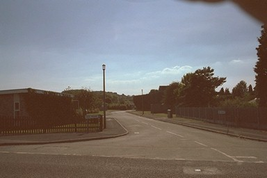
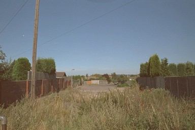

Where the canal crossed St Georges Road is guesswork, albeit informed by the contours. One guess is that it came along the line of High Mount...
... and continued along the footpath and into Ash Lea Drive.
